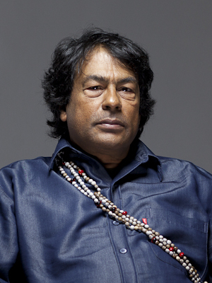

Quem é Ailton Krenak

Ailton Alves Lacerda Krenak, nascido em 29 de setembro de 1953, é um líder indígena, ambientalista, pensador, poeta e escritor brasileiro da etnia Krenak.
Ailton Krenak é uma das principais lideranças do movimento indígena brasileiro e possui reconhecimento internacional por sua atuação na defesa dos povos indígenas e do meio ambiente. Ele também foi o primeiro indígena eleito para a Academia Brasileira de Letras.
Ele me inspira porque defende a importância de respeitar a natureza e valorizar os povos indígenas. Seus pensamentos também me fazem refletir sobre a maneira como as pessoas vivem e sobre a nossa relação com o meio ambiente.
Frases que considero interessantes
"O futuro é aqui e agora, pode não haver o ano que vem."
Ailton Krenak, em O amanhã não está à venda.
"Estamos a tal ponto dopados por essa realidade nefasta de consumo e entretenimento que nos desconectamos do organismo vivo da Terra."
Ailton Krenak, em A vida não é útil.
Saiba mais
Caso queira conhecer mais sobre a história e o trabalho de Ailton Krenak, visite sua página na Wikipédia .